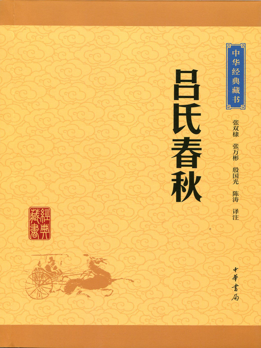

吕氏春秋•审分览第五慎势
吕氏春秋•审分览第五慎势#

【原文】
六曰：失之乎数，求之乎信，疑；失之乎势，求之乎国，危。吞舟之鱼，陆处则不胜蝼蚁。权钧则不能相使，势等则不能相并，治乱齐则不能相正。故小大、轻重、少多、治乱，不可不察，此祸福之门也。凡冠带之国，舟车之所通，不用象、译、狄鞮，方三千里。古之王者，择天下之中而立国，择国之中而立宫，择宫之中而立庙。天下之地，方千里以为国，所以极治任也。非不能大也，其大不若小，其多不若少。众封建，非以私贤也，所以便势全威，所以博义。义博利则无敌，无敌者安。故观於上世，其封建众者，其福长，其名彰。神农十七世有天下，与天下同之也。王者之封建也，弥近弥大，弥远弥小。海上有十里之诸侯。以大使小，以重使轻，以众使寡，此王者之所以家以完也。故曰以滕、费则劳，以邹、鲁则逸，以宋、郑则犹倍日而驰也，以齐、楚则举而加纲旃而已矣。所用弥大，所欲弥易。汤其无郼，武其无岐，贤虽十全，不能成功。汤、武之贤。而犹藉知乎势，又况不及汤、武者乎？故以大畜小吉，以小畜大灭，以重使轻从，以轻使重凶。自此观之，夫欲定一世，安黔首之命，功名著乎盘盂，铭篆著乎壶鉴，其势不厌尊，其实不厌多。多实尊势，贤士制之，以遇乱世，王犹尚少。天下之民穷矣苦矣。民之穷苦弥甚，王者之弥易。凡王也者，穷苦之救也。水用舟，陆用车，涂用輴，沙用鸠，山用樏，因其势也者令行。位尊者其教受，威立者其奸止，此畜人之道也。故以万乘令乎千乘易，以千乘令乎一家易，以一家令乎一人易。尝识及此，虽尧、舜不能。诸侯不欲臣於人，而不得已。其势不便，则奚以易臣？权轻重，审大小，多建封，所以便其势也。王也者，势也。王也者，势无敌也。势有敌则王者废矣。有知小之愈於大、少之贤於多者，则知无敌矣。知无敌则似类嫌疑之道远矣。故先王之法，立天子不使诸侯疑焉，立诸侯不使大夫疑焉。立适子不使庶孽疑焉。疑生争，争生乱。是故诸侯失位则天下乱，大夫无等则朝廷乱，妻妾不分则家室乱，适孽无别则宗族乱。慎子曰：“今一兔走，百人逐之，非一兔足为百人分也，由未定。由未定，尧且屈力，而况众人乎？积兔满市，行者不顾，非不欲兔也，分已定矣。分已定，人虽鄙，不争。”故治天下及国，在乎定分而已矣。庄王围宋九月，康王围宋五月，声王围宋十月。楚三围宋矣，而不能亡。非不可亡也，以宋攻楚，奚时止矣？凡功之立也，贤不肖强弱治乱异也。齐简公有臣曰诸御鞅，谏於简公曰：“陈成常与宰予，之二臣者，甚相憎也。臣恐其相攻也。相攻唯固，则危上矣。愿君之去一人也。”简公曰：“非而细人所能识也。”居无几何，陈成常果攻宰予於庭，即简公於庙。简公喟焉太息曰：“余不能用鞅之言，以至此患也。”失其数，无其势，虽悔无听鞅也，与无悔同。是不知恃可恃，而恃不恃也。周鼎著象，为其理之通也。理通，君道也。
【译文】
失去了驾驭臣下的方法，要求人们诚信，这是胡涂的。失去了君主的权势，仗恃着享有国家，这是危险的。能吞下船的大鱼，居于陆地就不能胜过蝼蛄蚂蚁。权力相同就不能役使对方，势力相等就不能兼并对方，冶乱相同就不能匡正对方。所以对大小、轻重，多少、治乱等情况，不可不审察清楚，这是通向祸福的门径。
凡是戴帽子束带子的文明国家，车船所能达到的地方，不用象、译、狄鞮等官员做翻译的地方，有三千里见方。古代称王的人，选择天下的正中来建立京畿，选择京畿的正中来建立官廷，选择宫廷的正中来建立祖庙。在普天下，只把千里见方的地方作为京畿，是为了更好地担起治理国家的担子。京畿并不是不能扩大，但是大了不如小了好，多了不如少了好。多分封诸侯国，不是因为偏爱贤德之人，而是为了有利于权势，保全住威严，是为了使道义扩大。道义扩大了，那就没有人与之为敌了。没有人与之为敌的人就安全。所以对上世考察一下，那些分封诸侯国多的人，他们的福分就长久，他们的名声就显赫。神农享有天下十七世，是与天下人共同享有啊。
称王的人分封诸侯国，越近的就越大，越远的就越小。边远之处有十里大的诸侯国。用大的诸侯国役使小的诸侯国，用权势重的诸侯国役使权势轻的诸侯国，用人多的诸侯国役使人少的诸侯国，这就是称王的人能保全天下的原因。所以说，用滕、费役使别国就费力，用邹、鲁役使别国就省力，用宋、郑役使别国就加倍容易，用齐、楚役使别国就等于把纲纪加在它们身上罢了。所使用的诸侯国越大，实现自己的愿望就越容易。汤如果没有郼，武王如果没有岐，他们的贤德即使达到十全十美的程度，也不能成就功业。凭着汤、武王那样的贤德，尚且需要借助于权势，更何况赶不上汤、武王的人呢?所以，用大的诸侯国役使小的诸侯国就吉祥，用小的诸侯国役使大的诸侯国就会灭亡，用权势重的诸侯国役使权势轻的诸侯国就顺从，用权势轻酌诸侯国役使权势重的诸侯国就不吉祥。由此看来，想要使一世平定，使百姓安定使功名刻铸在盘盂上，铭刻在壶鉴上，这样的人，他们对权势尊贵从不满足，他们对实力雄厚从不满足。有雄厚的实力，有尊贵的权势，有贤德之人辅佐，凭着这些，遇上乱世，至少也能成就王业。
天下的人民很贫穷很困苦了。人民的贫穷田苦越厉害，称王的人成就王业就越容易。凡是称王的，都是挽牧人民的贫穷困苦啊。水里使用船，陆上使用车，泥泞路上使用輴，沙土路上使用鸩，山路上使用樏，这是为了顺应不同的形势。能因势利导的，命令就能执行。地位尊贵的，教化就能被接受，威严树立的，奸邪就能制止。这就是治理人的原则。所以，用拥有万辆兵车的国家对拥有千辆兵车的国家发号施令就容易，用拥有千辆兵车的国家对大夫之家发号施令就容易，用大夫之家对一人发号施令就容易。如果认识到达一点，即使尧、舜都不能改变它。诸侯都不想臣服于人，可是却不得不这样。君王的地位如果不利，那么怎能轻易地使之臣服呢?称王的人权衡轻重，审察大小，多立诸侯，是为了使自己的地位有利。所谓称王，凭借的是权势。所谓称王，是权势无人与之抗衡。权势有人抗衡，那么称王的人就被废弃了。有知道小可以超过大．少可以胜过多的人，就知道怎样才能无人与之抗衡了。知道怎样才能无人与之抗衡，那么比拟僭越的事就会远远离开了。所以先王的法度是，立天子不让诸侯僭越，立诸侯不让大夫僭越，立嫡子不让庶子僭越。僭越就会产生争夺，争夺就会产生混乱。因此，诸侯丧失了爵位，那么天下就会混乱，大夫没有等级，那么朝廷就会混乱；妻妾不加区分，那么家庭就会混乱，嫡子庶子没有区别，那么宗族就会混乱。慎子说：“如果有一只兔子跑，就会有上百人追赶它，并不是一只兔子足以被上百份，是由于兔子的归属没有确定。归属没有确定，尧尚且台竭力追赶，更何况一般人呢?兔子摆满市，走路的人看都不看，并不是不想要兔子，是由于归属已经确定了。归属已经确定，人即使鄙陋，也不争夺。”所以治理天下及国家，只在于确定职分罢了。
楚庄王围困宋国九个月，楚康王围困宋国五个月，楚声王围困宋国十个月。楚国围困过宋国三次，却不能灰亡它。并不是不可取灭亡，拿一个象宋国一样无德的国家去攻打宋国，什么时候才能结束昵?凡是功业的建立，都是因为贤与不肖、强与弱，治与乱不相同啊。
齐简公有个臣子叫诸御鞅，他向简公进谏说；“陈常与宰予，这两个臣子彼此非常仇恨。我担心他们互相攻打。他们一味固执地要互相攻打，就会危害到君王。希望您罢免一个人。”简公说“这不是你这样的浅陋之人所能知道的。”过了没多久，陈常果然在朝廷上攻打宰予，在宗庙里追上了简公。简公长叹着说，“我不能采纳诸御鞅的意见，以至于遭到这样的祸患。”失去了驾驭臣下的方法，丧失了君主的权势，虽然后悔没有听从诸御鞅的话，与不后悔的结果是一样的。这就是不知道依靠可以依靠的东西，却依靠不可依靠的东西。周鼎上刻铸物象，是为了让事理贯通。事理贯通，这是当君主应该掌握的原则啊。